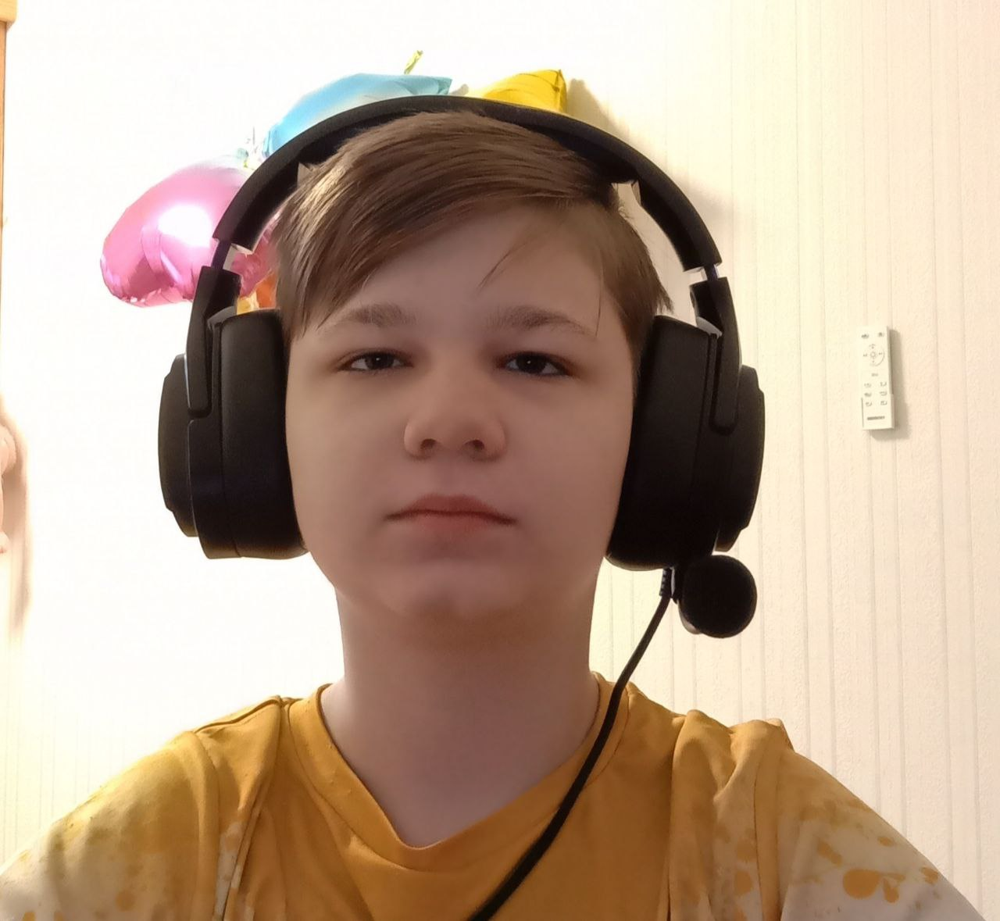
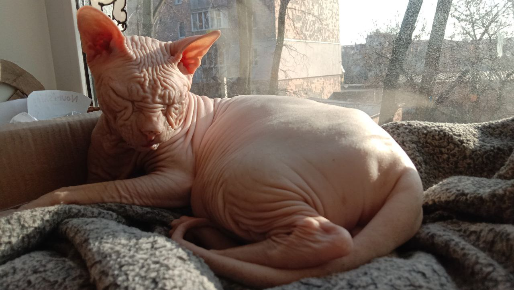
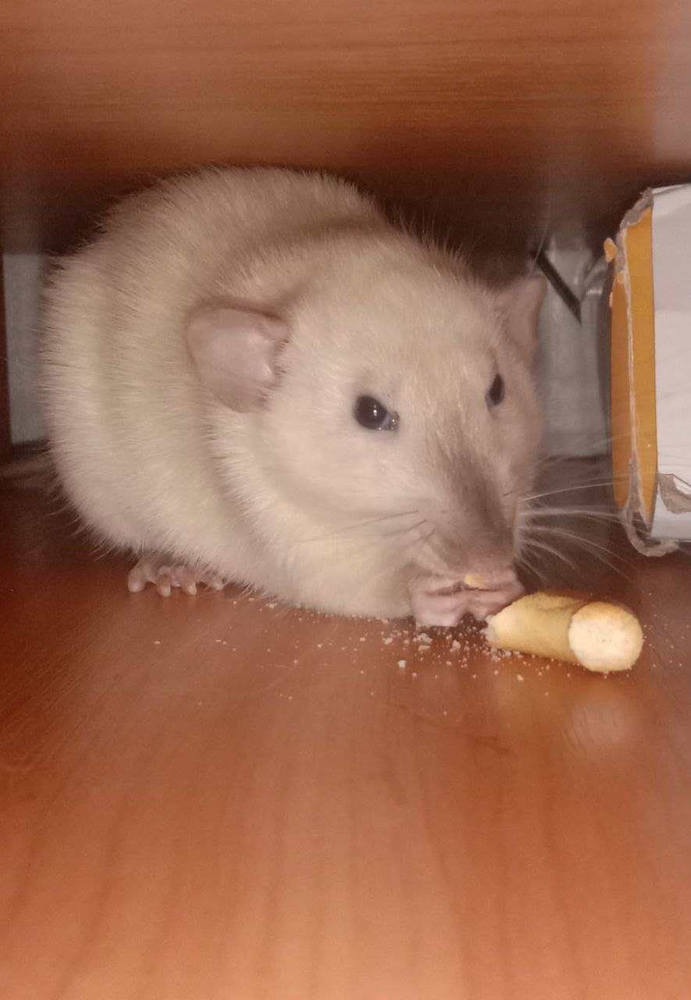

Я Михайло Нечай, мені 13 років. Я живу в Білій Церкві. Я народився 2010 року 26 червня, у Донецькій області. Я вивчаю веб дизайн щоб заробляти на цьому гроші. Мій улюблений колір помаранчевий.

Це мій кіт Оскар, йому 7 років. Він лисий тому що в нього порода сфінкс

Це мій пацюк Патрік, йому 3 місяці.В нього порода дамбо.